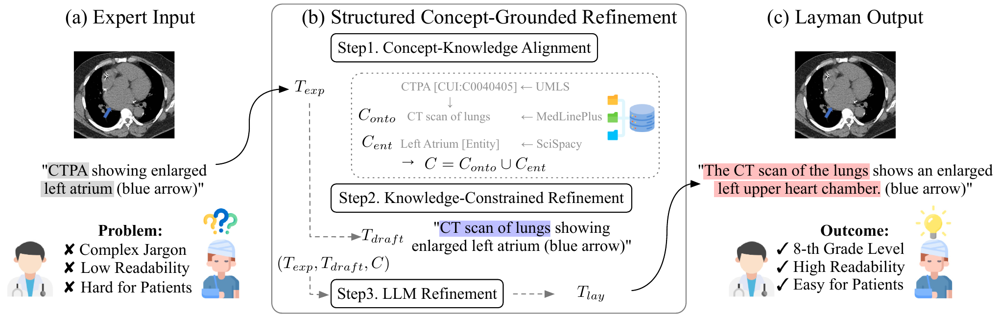

80K medical images, paired with expert and verified lay captions.
Medical Vision-Language Models (Med-VLMs) have achieved expert-level proficiency in interpreting diagnostic imaging. However, current models are predominantly trained on professional literature, limiting their ability to communicate findings in the lay register required for patient-centered care. To bridge this gap we introduce MedLayBench-V, the first large-scale multimodal benchmark dedicated to expert–lay semantic alignment. Unlike naive simplification approaches that risk hallucination, our dataset is constructed via a Structured Concept-Grounded Refinement (SCGR) pipeline. SCGR enforces strict semantic equivalence by integrating UMLS Concept Unique Identifiers (CUIs) with micro-level entity constraints. MedLayBench-V provides a verified foundation for training and evaluating next-generation Med-VLMs capable of bridging the communication divide between clinical experts and patients.

@misc{jang2026medlaybenchvlargescalebenchmarkexpertlay,
title = {MedLayBench-V: A Large-Scale Benchmark for Expert-Lay Semantic Alignment in Medical Vision Language Models},
author = {Jang, Han and Lee, Junhyeok and Eum, Heeseong and Choi, Kyu Sung},
booktitle = {Findings of the Association for Computational Linguistics: ACL 2026},
year = {2026}
} Code
Code